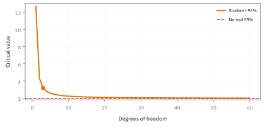
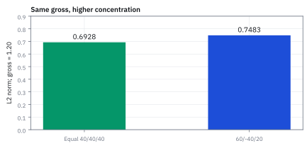

3.4 Norms
วัดความยาวของข้อมูลหลายมิติอย่างเป็นระบบ
พอร์ต long-short ห้าตัวมี weights 40%, −25%, 30%, 15%, −10% ของเงินทุนหรือ net asset value (NAV) คณะกรรมการถามคำเดียวว่าพอร์ตนี้ใหญ่แค่ไหน ควรตอบตัวเลขอะไร?
เฉลย: ตอบตัวเดียวไม่ได้ ผลรวมมีเครื่องหมายได้ 0.50 คือ net เอียงตลาดครึ่งพอร์ต ผลรวมขนาดได้ 1.20 คือ gross ใช้เงินเกินทุน 20% ตัวใหญ่สุดคือ 0.40 ถ้าชื่อนี้เป็นศูนย์เสีย 40% ของ NAV ทั้งสามเลขจริงพร้อมกัน
Norm คือกติกาวัดขนาดของ vector ที่ไม่ติดลบ ขยายตาม leverage ตรง ๆ และรวมสองพอร์ตแล้วไม่เกินผลรวมของขนาด แต่ละ norm ตอบคำถามคนละข้อ งานจริงเลือก norm ให้ตรงกับ risk limit และวัตถุประสงค์ของ model
ศัพท์ที่ใช้ในหัวข้อนี้
- norm
- กฎที่วัดขนาดของ vector แล้วได้จำนวนไม่ติดลบ ใช้แปลง portfolio ที่มีหลาย weights ให้เป็นตัวเลขเดียวเพื่อกำหนด risk limit หรือ trading cost
- L1 norm
- ผลรวมค่าสัมบูรณ์ของทุก component ใน vector ใช้วัด gross exposure และ turnover เพราะทุก dollar ที่ซื้อหรือขายถูกนับตามขนาดจริง
- L2 norm
- square root ของผลรวมกำลังสองของทุก component ใช้วัดขนาดแบบให้ component ใหญ่โดดเด่น ใช้เป็นแกนของ volatility และ quadratic risk
- turnover
- ขนาดการซื้อขายที่เกิดจากการเปลี่ยน weights ในช่วงหนึ่ง ใช้ประมาณ commission, spread, market impact และบอกว่ากลยุทธ์กิน capacity แค่ไหน
- notional
- มูลค่าอ้างอิงของ position หรือคำสั่งซื้อขายก่อนหักล้างกับ position อื่น ใช้แปลง weight และ turnover ให้เป็นจำนวน USD ที่ execution desk ต้องจัดการจริง
- spread
- ช่องว่างระหว่างราคาที่พร้อมซื้อกับราคาที่พร้อมขาย ใช้ประมาณต้นทุนที่เกิดทันทีเมื่อส่งคำสั่ง แม้ราคาอ้างอิงกลางตลาดยังไม่ขยับ
- volatility
- ความผันผวนของ return ซึ่งมักสรุปด้วย standard deviation ต่อช่วงเวลา ใช้วัด risk และเปรียบเทียบ portfolio ที่มี weights ต่างกัน
- standard deviation
- รากที่สองของ variance ซึ่งวัดขนาดการกระจายในหน่วยเดียวกับ return เดิม ใช้รายงาน volatility และแปลง L2 norm ของ weights เป็น portfolio risk ภายใต้สมมติฐานที่กำหนด
- variance
- ค่าเฉลี่ยของ squared deviations จาก mean ใช้วัดการกระจายแบบกำลังสอง และเป็นหน่วยตั้งต้นก่อนถอดรากเพื่อรายงาน standard deviation
- covariance
- ตัววัดว่า return ของสินทรัพย์สองตัวเบี่ยงจากค่าเฉลี่ยไปด้วยกันอย่างไร ใช้รวมความสัมพันธ์ข้าม positions เข้าสู่ portfolio volatility แทนการสมมติว่าทุกตัว independent
- risk limit
- เพดาน exposure ที่ desk ยอมรับได้ ใช้หยุด portfolio ไม่ให้โตเกินขนาดก่อน P&L แย่จนต้องอธิบายกับคนทั้งชั้น
- leverage
- การถือ gross exposure มากกว่าเงินทุนของตัวเอง ใช้เพิ่มขนาดผลตอบแทนและขนาดขาดทุนพร้อมกัน จึงต้องวัด gross exposure แยกจาก net exposure
- net asset value (NAV)
- มูลค่าสินทรัพย์สุทธิของ portfolio หลังหักหนี้สิน ใช้เป็นฐานเงินทุนสำหรับแปลง weights และ turnover ให้เป็นจำนวนเงินที่ต้องซื้อขายจริง
- L-infinity norm (L∞)
- ขนาดของช่องที่ใหญ่ที่สุดใน vector ใช้คุมเพดานต่อชื่อ เพราะบอกตรง ๆ ว่าถ้าหุ้นตัวเดียวเป็นศูนย์จะเสียกี่เปอร์เซ็นต์ของ NAV
- effective N
- หนึ่งส่วนผลรวมกำลังสองของ weights ใช้บอกว่าพอร์ตกระจายเท่ากับถือหุ้นขนาดเท่ากันกี่ตัว ออกแบบมาสำหรับ weights ที่รวมกันได้ 1
- ridge
- การใส่ค่าปรับเท่ากับผลรวมกำลังสองของ weights ใน optimizer ใช้กดตัวใหญ่ให้เล็กลง แต่แทบไม่ดันตัวเล็กให้เป็นศูนย์
- lasso
- การใส่ค่าปรับเท่ากับ L1 norm ของ weights ใน optimizer ใช้ดันหลายตัวให้เป็นศูนย์พอดี จึงได้พอร์ตที่ถือไม่กี่ชื่อและเทรดได้จริง
- mean-variance
- วิธีเลือกพอร์ตที่มองผลตอบแทนคาดหวังกับความผันผวนพร้อมกันสองแกน ใช้หาส่วนผสมที่ให้ผลตอบแทนสูงสุดต่อความเสี่ยงหนึ่งหน่วย และเป็นต้นทางของการเลือกพอร์ตในบทที่ 17
สัญลักษณ์ที่ใช้ในหัวข้อนี้
| สัญลักษณ์ | ความหมาย | หน่วย |
|---|---|---|
| $\mathbf{w}$ | vector ของ portfolio weights | ไม่มีหน่วย |
| $\|\mathbf{w}\|_1$ | L1 norm ของ weights | ไม่มีหน่วย |
| $\|\mathbf{w}\|_2$ | L2 norm ของ weights | ไม่มีหน่วย |
| $\|\mathbf{w}\|_\infty$ | L∞ norm ขนาดของ weight ที่ใหญ่ที่สุด | ไม่มีหน่วย |
| $N_{\text{eff}}$ | effective N จำนวนหุ้นขนาดเท่ากันที่กระจายเท่าพอร์ตนี้ | จำนวนตัว |
| $n$ | จำนวน positions ใน vector | จำนวนตัว |
| $m$ | ขนาดเฉลี่ยต่อตัว คือ L1 norm เฉลี่ยต่อหนึ่งตัว | ไม่มีหน่วย |
| $\Delta\mathbf{w}$ | การเปลี่ยนแปลง weights จาก rebalance | ไม่มีหน่วย |
| $\sigma$ | volatility สมมติร่วมของแต่ละ position ในตัวอย่าง | ต่อปี |
| $N$ | net asset value ของ portfolio | USD |
ที่มาที่ไป: คำว่า 'ใหญ่' แปลว่าอะไรเมื่อมีหลายมิติ
ในหนึ่งมิติ การบอกว่าตัวเลขใหญ่แค่ไหนไม่มีอะไรให้เถียง แต่พอมีหลายช่องพร้อมกัน คำถามนี้ไม่มีคำตอบเดียว
ถ้าปรับพอร์ตโดยขยับห้าตัว ตัวละ 2% กับขยับตัวเดียว 10% อันไหนเรียกว่าเปลี่ยนเยอะกว่ากัน คำตอบขึ้นกับว่าเรากำลังถามเรื่องอะไร
ถ้าถามเรื่องค่าธรรมเนียม สองอันนี้เท่ากัน เพราะจ่ายตามปริมาณรวม แต่ถ้าถามเรื่องความเสี่ยงจากการกระจุกตัว อันหลังแย่กว่ามาก
เรื่องเดียวกันเกิดกับการเดินในเมืองที่ถนนเป็นตาราง: ไปตะวันออก 3 กม. แล้วขึ้นเหนือ 4 กม. เท้าเดินจริง 3 + 4 = 7 กม. แต่ระยะตรงแบบนกบินคือ $\sqrt{3^2+4^2}=5$ กม. ทั้งสองถูก แค่ตอบคนละคำถาม
หัวข้อนี้จึงไม่ได้สอนสูตรเดียว แต่สอนว่ามีวิธีวัดหลายแบบ แต่ละแบบตอบคำถามคนละข้อ และการเลือกผิดแบบทำให้ได้คำตอบที่ถูกต่อคำถามที่เราไม่ได้ถาม
ประวัติความเป็นมา: จากเรขาคณิตของมินคอฟสกีสู่สัจพจน์ของบานาค
แนวคิดเรื่องการวัดขนาดของ vector หลายมิติเริ่มเป็นรูปธรรมจากผลงานของ Hermann Minkowski ราว ๆ ปี ค.ศ. 1896 ในหนังสือ Geometrie der Zahlen เขาคิดค้นกลุ่มของ norm ที่เรียกว่า L-p และพิสูจน์อสมการสามเหลี่ยมสำหรับมิติใด ๆ ทำให้เห็นรูปทรงของหน่วยวัดขนาดได้ ตัวที่ยกกำลังสองให้ทรงกลมกลมมน ส่วนตัวที่ใช้ค่าสัมบูรณ์ให้ทรงเหลี่ยมแบบเพชร
ต่อมาราว ๆ ปี ค.ศ. 1922 Stefan Banach นักคณิตศาสตร์ชาวโปแลนด์ วางรากฐานสัจพจน์สามข้อ ที่ใช้ตัดสินว่าอะไรนับเป็น norm ได้บ้าง จากนั้นการวัดขนาดก็เลิกเป็นเรื่องของสูตรเฉพาะกิจ และกลายเป็นกติกากลางที่ทุกวิธีต้องผ่านเหมือนกันหมด
ที่เรื่องนี้สำคัญกับการเงินคือ ความเสี่ยงของพอร์ตก็คือการวัดขนาดของ vector น้ำหนักนั่นเอง อสมการสามเหลี่ยมของ Banach จึงกลายเป็นคำรับประกันว่าการกระจายการลงทุนจะไม่ทำให้แย่ลง
แล้วเอาไปใช้ทำอะไรได้จริงบ้าง
การวัดความยาวของข้อมูลหลายมิติ แปลงเป็นตัวเลขที่ตัดสินใจได้จริง
ใช้วัดว่าการปรับพอร์ตครั้งนี้ต้องซื้อขายเท่าไร ซึ่งแปลงตรงเป็นค่าธรรมเนียมที่จะจ่าย
ใช้ตั้งเพดานการซื้อขายต่อรอบ เพื่อไม่ให้ต้นทุนกินกำไรหมด ซึ่งเราจะทำเป็นข้อบังคับจริงในหัวข้อ 8.8
ใช้เป็นตัวลงโทษในการหาคำตอบที่ดีที่สุด เพื่อบังคับให้คำตอบไม่กระจุกอยู่ที่สินทรัพย์ไม่กี่ตัว
Figure 3.4a — L1 มีมุม ส่วน L2 กลม

เส้นขอบ L1 เป็นรูปเพชรและมีมุม จึงมักผลักคำตอบไปสู่การเปลี่ยนไม่กี่ position แบบชัด ๆ; เส้นขอบ L2 กลมและเพิ่มโทษอย่างต่อเนื่องเมื่อ weight ใดใหญ่เกินเพื่อน — geometry จึงกลายเป็นพฤติกรรมการจัด portfolio.
นิยาม — กติกาสามข้อที่ norm ทุกตัวต้องผ่าน
สามข้อนี้คือเงื่อนไขที่ทำให้ตัวเลขขนาดเอาไปคุม risk ได้: ไม่ติดลบ ขยายตาม leverage ตรง ๆ และรวมสองพอร์ตแล้วไม่เกินผลรวมของสองขนาด ขั้นที่ 8 และ 9 จะลองกติกาข้อสองกับข้อหนึ่งด้วยตัวเลขจริง
การวัดขนาดแบบใดก็ตาม จะได้รับการยอมรับว่าเป็น norm ก็ต่อเมื่อผ่านสัจพจน์สามข้อนี้ ข้อแรกขนาดต้องไม่ติดลบและเป็นศูนย์ได้เมื่อเป็น zero vector เท่านั้น ข้อสองเมื่อขยายทิศทางด้วยตัวคูณที่เป็นตัวเลขตัวเดียว ขนาดต้องขยายตามค่าสัมบูรณ์ของตัวคูณ
ข้อสามคืออสมการสามเหลี่ยม ซึ่งมีความหมายทางการเงินลึกซึ้งที่สุด ในมุมของความเสี่ยง อสมการนี้รับประกันว่าความเสี่ยงของพอร์ตผสมจะไม่มีวันเกินผลรวมความเสี่ยงย่อย ซึ่งเป็นแกนหลักของการกระจายการลงทุน
ในมุมของการซื้อขาย การคำนวณ turnover สุทธิจะน้อยกว่าหรือเท่ากับผลรวมคำสั่งซื้อขายดิบเสมอ เพราะคำสั่งซื้อและขายในทิศตรงข้ามสามารถหักกลบกันได้
ขั้นที่ 1 — ลองวัดสองแผนด้วยมือ: ขยับห้าตัวตัวละ 2% กับขยับตัวเดียว 10%
ประโยคจากที่มาที่ไปข้างบนลองเป็นตัวเลขได้ทันที: สองแผนปรับพอร์ต แผนไหน “ใหญ่กว่า” ลองวัดสองแบบ
วิธีแรกบวกขนาดตรง ๆ: สองแผนเท่ากัน เพราะทั้งคู่ซื้อขายรวม 10% ของพอร์ต นี่คือคำถามเรื่องค่าธรรมเนียม
วิธีที่สองยกกำลังสองก่อนบวก: แผน B ใหญ่กว่า 2.24 เท่า เพราะ $0.10^2=0.01$ แต่ $5\times0.02^2=0.002$ กำลังสองลงโทษการกระจุกตัว ค่านี้วัดการกระจุกตัวของขนาด ในกรณีสินทรัพย์มี volatility เท่ากันและไม่สัมพันธ์กันจึงใช้แทนความเสี่ยงได้ หาก covariance ต่างออกไป ต้องคำนวณความเสี่ยงจาก covariance ด้วย
สองวิธีให้คำตอบต่างกันเพราะถามคนละคำถาม ไม่ใช่เพราะวิธีใดผิด ชื่อของสองวิธีนี้คือ L1 norm และ L2 norm
สองบรรทัดบนคือสองแผน แผน A ขยับห้าตัวตัวละนิด แผน B ขยับตัวเดียวแรง ๆ
บรรทัดที่สามคือการวัดแบบบวกขนาดตรง ๆ สองแผนได้เท่ากันพอดี ไม้บรรทัดนี้จึงแยกสองแผนไม่ออก
สองบรรทัดถัดมาคือการวัดแบบรากของผลรวมกำลังสอง แผน B ใหญ่กว่า 2.24 เท่า เพราะการยกกำลังสองลงโทษการกระจุกตัว ซึ่งเป็นสิ่งที่ไม้บรรทัดแรกมองไม่เห็น
กลับไปที่พอร์ตห้าตัวในโจทย์เปิดเรื่อง
ไม้บรรทัดสองแบบในขั้นที่ 1 ให้คำตอบต่างกัน คราวนี้เอาไม้บรรทัดสี่แบบมาวัดพอร์ตเดียวกัน แล้วดูว่าแต่ละตัวตอบคำถามอะไร
ขั้นที่ 2 — ของที่โจทย์ให้: weights ห้าตัว และผลรวมแบบมีเครื่องหมาย
weights เป็นสัดส่วนของ NAV ค่าบวกคือ long ค่าลบคือ short เริ่มจากไม้บรรทัดที่ง่ายที่สุด คือบวกทุกตัวตรง ๆ พร้อมเครื่องหมาย
ผลรวมแบบเก็บเครื่องหมายคือ net exposure 0.50 แปลว่าพอร์ตเอียงไปทางตลาดขาขึ้นครึ่งหนึ่งของ NAV
ผลรวมนี้ยังไม่ใช่ norm เพราะ long กับ short หักกันได้ ขั้นที่ 9 จะแสดงพอร์ตที่ผลรวมเป็นศูนย์ทั้งที่ถือของอยู่จริง
ขั้นที่ 3 — L1 norm: รวมขนาดโดยตัดเครื่องหมายทิ้ง
ถ้าอยากรู้ว่าเงินทำงานอยู่ทั้งหมดเท่าไร short ต้องนับเป็นขนาดบวกเหมือน long
ได้ gross exposure 1.20 หรือ 120% ของ NAV แปลว่าพอร์ตถือของมากกว่าทุนที่มี 20% ตัวเลขนี้คือฐานที่โบรกเกอร์ใช้เรียกหลักประกันและเป็นฐานของต้นทุนเทรด
ขั้นที่ 4 — L2 norm และ effective N
ไม้บรรทัดที่สามยกกำลังสองก่อนบวก เครื่องหมายหายไปเองและตัวใหญ่ได้น้ำหนักมาก
0.40 ตัวเดียวให้ 0.16 เกือบครึ่งของ 0.345 นี่คือความหมายของการลงโทษการกระจุกตัว ถอดรากได้ความยาว 0.5874
effective N คือหนึ่งส่วนผลรวมกำลังสอง บอกว่าพอร์ตนี้กระจายเท่ากับถือหุ้นขนาดเท่ากันราว 2.90 ตัว ไม่ใช่ 5 ตัว สองบรรทัดล่างเช็กสูตรกับกรณีที่รู้คำตอบ: ห้าตัวตัวละ 0.2 ต้องได้ 5 พอดี
ขั้นที่ 5 — L∞ norm: ขนาดของตัวที่ใหญ่ที่สุด
ไม้บรรทัดที่สี่ไม่บวกอะไรเลย หยิบแค่ขนาดของตัวที่ใหญ่ที่สุด
ตัวนี้ตอบคำถามว่าถ้าหุ้นตัวเดียวเป็นศูนย์ เสียเท่าไร คำตอบคือ 40% ของ NAV
กองทุนรวมทั่วไปมีเพดานต่อชื่อ เช่นไม่เกิน 5% ต่อตัว ซึ่งเขียนเป็น $\|\mathbf{w}\|_\infty\le0.05$ ใส่ใน optimizer ได้ตรง ๆ พอร์ตนี้ที่ 0.40 จึงกระจุกมาก ตัวเดียวกินเกือบครึ่งพอร์ต
ขั้นที่ 6 — ทำไม L∞ ≤ L2 ≤ L1 จริงกับทุก vector
สามค่าที่ได้เรียงกันพอดี ขั้นนี้แสดงว่าลำดับนี้ไม่ใช่โชคของพอร์ตนี้
บรรทัดที่สามถึงห้า: ผลรวมกำลังสองมีกำลังสองของตัวใหญ่สุดอยู่ข้างในเสมอ บวกของที่เหลือซึ่งไม่ติดลบ จึงไม่มีทางเล็กกว่า ถอดรากแล้วลำดับยังเหมือนเดิม
บรรทัดที่หกถึงเจ็ด: กางกำลังสองของผลรวมแบบ $(a+b)^2=a^2+b^2+2ab$ พจน์ไขว้ของทุกคู่ไม่ติดลบเพราะใช้ค่าสัมบูรณ์ จึงได้ไม่น้อยกว่าผลรวมกำลังสองเฉย ๆ ทั้งสองเหตุผลไม่ได้ใช้ตัวเลขของพอร์ตนี้เลย ลำดับจึงจริงกับทุก vector
L1, L2 และ L∞ เป็นสมาชิกของครอบครัว Lp
ใส่ $p=1$ ได้ L1 ใส่ $p=2$ ได้ L2 ทุกค่าของ $p$ ผ่านกติกาสามข้อของ norm สไลด์ของคอร์สให้ทั้งสี่แบบคือ L1, L2, L∞ และ Lp
ยิ่ง $p$ ใหญ่ ตัวที่ใหญ่ที่สุดยิ่งมีน้ำหนักมาก vector (1, 2) ให้ 3, 2.236 และ 2.080 ลดลงเข้าหา 2 ซึ่งเป็น L∞
ขั้นที่ 7 — ขอบบนอีกด้าน: L1 ไม่เกิน √n เท่าของ L2
L1 ใหญ่กว่า L2 ได้ แต่ใหญ่กว่าได้ไม่เกินกี่เท่า ให้ $m$ เป็นขนาดเฉลี่ยต่อตัว แล้วใช้ความจริงว่ากำลังสองไม่ติดลบ
ผลรวมกำลังสองของระยะห่างจากค่าเฉลี่ยไม่มีทางติดลบ กางวงเล็บแล้วแทน $m$ จึงได้ว่า L2 กำลังสองลบ L1 กำลังสองส่วน $n$ ต้องไม่ติดลบ ย้ายข้างแล้วถอดรากได้บรรทัดที่สี่ถึงห้า
ของพอร์ตนี้: 0.345 − 1.44/5 = 0.345 − 0.288 = 0.057 ไม่ติดลบจริง สองข้างเท่ากันพอดีเมื่อระยะห่างจากค่าเฉลี่ยเป็นศูนย์ทุกตัว คือทุกตัวขนาดเท่ากัน
ขั้นที่ 8 — ลองกติกาข้อสองด้วย leverage 2 เท่า
คูณทุก weight ด้วย 2 แล้ววัดใหม่ทั้งสามแบบ ถ้าเป็น norm จริงต้องโตสองเท่าพอดี
ทั้งสาม norm โตสองเท่าพอดี นี่คือเหตุผลที่ norm เชื่อได้: เร่ง leverage สองเท่า ตัวเลขความเสี่ยงต้องขึ้นสองเท่า ถ้ามาตรวัดใดขึ้นแค่ 1.4 เท่า มันกำลังซ่อนความเสี่ยง
บรรทัดล่างคือ effective N ของ 2w ได้ 0.72 ซึ่งน้อยกว่าหนึ่งตัวและไม่มีความหมาย effective N เป็นอัตราส่วนที่ออกแบบมาสำหรับ weights ที่รวมกันได้ 1 ไม่ใช่ norm จึงไม่ผ่านการทดสอบนี้
พอร์ตห้าตัวเองก็รวมได้ 0.50 ไม่ใช่ 1 ตัวเลข 2.90 ในขั้นที่ 4 จึงใช้เป็นตัวบอกการกระจุกตัวแบบคร่าว ๆ เท่านั้น
ขั้นที่ 9 — ผลรวมธรรมดาไม่ใช่ norm: ตกกติกาข้อแรก
ลองพอร์ตที่ long ตัวแรก 50% และ short ตัวที่สอง 50% แล้ววัดด้วยผลรวมแบบมีเครื่องหมายกับ L1
พอร์ตนี้ถือของจริงหนึ่งเท่าของ NAV แต่ผลรวมแบบมีเครื่องหมายได้ศูนย์ ถ้าผลรวมเป็น norm พอร์ตนี้ต้องเป็นพอร์ตว่าง ซึ่งไม่จริง จึงตกกติกาข้อแรก
ผลรวมแบบมีเครื่องหมายยังมีประโยชน์ในฐานะ net exposure แต่ใช้วัดขนาดไม่ได้ ส่วน L1 ของพอร์ตเดียวกันได้ 1.0 ตรงกับเงินที่ทำงานจริง
สี่ตัวเลขบน NAV \$100 ล้าน: ใครใช้ตัวไหน
คำถาม: พอร์ตห้าตัวนี้มี NAV \$100 ล้าน net, gross, L2 และ L∞ แปลงเป็นเงินได้เท่าไร และถ้าตลาดลง 1% พอร์ตเสียราวเท่าไร?
ของที่มี: net 0.50, L1 1.20, L2 0.5874, L∞ 0.40 จากขั้นที่ 2 ถึง 5 และสมมติว่าทุกตัวขยับตามตลาดหนึ่งต่อหนึ่ง
1. Gross: 1.20 × 100M = \$120 ล้าน ใช้คิดหลักประกันที่โบรกเกอร์เรียกและต้นทุนเทรด
2. Net: 0.50 × 100M = \$50 ล้าน ตลาดลง 1% พอร์ตลงราว 0.50 × 1% = 0.5% หรือ \$500,000
3. L∞: 0.40 × 100M = \$40 ล้าน คือเงินที่หายทันทีถ้าชื่อใหญ่สุดเป็นศูนย์
4. L2 0.5874 ไม่แปลงเป็นเงินตรง ๆ ใช้เป็นเป้าความเสี่ยงหรือตัวลงโทษใน optimizer
เฉลย: gross \$120 ล้าน, net \$50 ล้าน ซึ่งตลาด −1% ทำให้เสียราว \$500,000 และชื่อใหญ่สุด \$40 ล้าน
เช็ก 10 วินาที: ลำดับ 0.40 ≤ 0.5874 ≤ 1.20 ต้องจริงตามขั้นที่ 6 และ net ต้องไม่เกิน gross
งานจริง: รายงาน gross, net และตำแหน่งใหญ่สุดพร้อมกันเสมอ รายงาน 0.50 ตัวเดียวฟังเหมือนพอร์ตอนุรักษ์นิยม รายงาน 1.20 ฟังเหมือนใช้ leverage เกินทุน รายงาน 0.40 ฟังเหมือนเดิมพันชื่อเดียว ทั้งสามจริงพร้อมกัน
กับดัก: norm ทุกตัวมองแค่ weights ไม่รู้จัก volatility และ correlation พอร์ตที่ L2 ต่ำอาจยังเสี่ยงมากถ้าถือหุ้นเหมืองทองห้าตัวที่ขยับพร้อมกัน ตัวที่แก้เรื่องนี้คือ covariance matrix ในหัวข้อ 6.7
L1 ตอบคำถาม “ซื้อขายไปเท่าไร”
กำหนด weight เก่าและใหม่ตามลำดับ AAPL, JPM, XOM แล้วหาส่วนต่างก่อน อย่าเอา weight ใหม่ทั้งก้อนไปเรียก turnover; สิ่งที่สร้าง cost คือสิ่งที่เปลี่ยน ไม่ใช่สิ่งที่ยังนอนนิ่งอยู่
ขั้นที่ 10 — หา weight change
จะวัดว่าต้องซื้อขายเท่าไร ต้องเริ่มจากผลต่างของน้ำหนักก่อนและหลังก่อน
$\Delta\mathbf{w}$ คือ vector การเปลี่ยน weights ค่า 0.10 ของ AAPL คือซื้อเพิ่ม 10% ของ NAV, -0.10 ของ JPM คือเพิ่ม short 10% ของ NAV, และ 0.10 ของ XOM คือซื้อเพิ่ม 10% ของ NAV ทุก component มีหน่วยเป็นสัดส่วนของเงินทุน
ขั้นที่ 11 — วัด turnover ด้วย L1 norm
ค่าธรรมเนียมคิดตามปริมาณที่ซื้อขายจริง ไม่สนทิศ จึงต้องบวกขนาดของทุกช่อง โดยตัดเครื่องหมายทิ้ง
$\|\Delta\mathbf{w}\|_1$ รวมขนาดการเปลี่ยนแปลงโดยไม่หักเครื่องหมาย จึงได้ 0.30 หรือ 30% ของ NAV ใช้เป็น turnover รวมก่อนแปลงเป็น USD cost; การหักบวกกับลบเข้าด้วยกันจะซ่อนการซื้อขายจริง
ขั้นที่ 12 — แปลงเป็น USD traded
แปลงสัดส่วนเป็นเงิน เพื่อให้ตัวเลขนี้เอาไปคูณกับค่าธรรมเนียมต่อดอลลาร์ได้
$N=\$10{,}000{,}000$ คือ NAV ของ book และ turnover 0.30 มาจากขั้นที่ 11 ผลคูณเป็น $3M$ ของ notional traded ซึ่งเป็นฐานที่ execution desk ใช้คูณ commission, spread และ impact estimate
turnover กลายเป็นค่าเทรดรายปี
คำถาม: พอร์ตห้าตัวบน NAV \$100 ล้าน รีบาลานซ์เดือนละครั้ง แต่ละครั้ง L1 ของการเปลี่ยน weights เท่ากับ 0.30 และค่าเทรดรวมทุกอย่าง 10 basis points คือ 0.10% ของเงินที่เทรด ปีหนึ่งเสียเท่าไร?
ของที่มี: NAV \$100 ล้าน, L1 ของการเปลี่ยน 0.30 ต่อครั้ง, ต้นทุน 0.0010 ต่อดอลลาร์ที่เทรด, 12 ครั้งต่อปี
1. เงินที่เทรดต่อครั้ง: 0.30 × 100,000,000 = \$30 ล้าน
2. ต้นทุนต่อครั้ง: 0.0010 × 30,000,000 = \$30,000
3. ต่อปี: 12 × 30,000 = \$360,000 เทียบ NAV คือ 360,000 / 100,000,000 = 0.36%
เฉลย: \$30,000 ต่อการรีบาลานซ์ หรือ \$360,000 ต่อปี เท่ากับ 0.36% ของ NAV
เช็ก 10 วินาที: 0.30 × 0.10% = 0.03% ต่อครั้ง คูณ 12 ได้ 0.36%
งานจริง: ต้นทุนเกาะ L1 ของการเปลี่ยน weights จึงใส่ L1 เป็นตัวลงโทษหรือเพดาน turnover ใน optimizer ได้ตรง ๆ
กับดัก: ใช้ L1 ของ weights ใหม่ทั้งก้อนแทนส่วนต่าง จะนับของที่ไม่ได้เทรดเป็นต้นทุนด้วย
Figure 3.4b — turnover นับทุกไม้ ไม่ใช่แค่ผลสุทธิ

แท่งละ 10% คือ notional ที่ต้องส่งซื้อขายจริง แม้ signed net weight change เหลือเพียง 10% แต่ desk ยังต้องพาเงินครบ \$3 ล้าน ผ่านตลาด และต้นทุนคิดจากสาม ticket นี้ ไม่ได้คิดจากผลสุทธิบนกระดาษ.
L2 ตอบคำถาม “weight vector ใหญ่แค่ไหน”
สมมติสาม position independent และมี volatility ต่อปีเท่ากัน 20% การกระจายความเสี่ยงแบบง่ายนี้ทำให้ portfolio volatility แปรตาม L2 norm ของ weight vector ไม่ใช่ L1 norm
ขั้นที่ 13 — คำนวณ L2 norm
อีกวิธีวัดความยาวคือยกกำลังสองแล้วถอดราก ซึ่งลงโทษช่องที่ใหญ่มากหนักกว่า
ยกกำลังสองทีละช่องก่อน เครื่องหมายลบจึงหายไป แล้วบวกกันได้ 0.56 ก่อนถอดรากเป็นความยาวจริง
ความยาวนี้ไม่เท่ากับผลรวมของขนาดแต่ละช่องซึ่งเป็น 1.20 เพราะ norm แบบนี้ลงโทษช่องที่ใหญ่มากกว่าช่องที่เล็ก
ขั้นที่ 14 — พิสูจน์ที่มา: ทำไม L2 Norm จึงวัด Volatility ได้เมื่อสินทรัพย์เป็นอิสระต่อกัน
ที่มานี้ชี้ให้เห็นเงื่อนไขสำคัญสองประการ: สินทรัพย์ต้องไม่มี correlation ต่อกันเลย และต้องมีความเสี่ยงรายตัวเท่ากัน หากเงื่อนไขใดเงื่อนไขหนึ่งผิดไป ความสัมพันธ์ระหว่างความเสี่ยงรวมกับ $L_2$ norm จะใช้ไม่ได้ทันที
เริ่มต้นจากนิยาม variance ของผลรวมเชิงเส้น เมื่อสินทรัพย์ทั้งสามตัวเป็นอิสระต่อกัน พจน์ covariance ข้ามคู่ทั้งหมดจึงกลายเป็นศูนย์ หายไปจากสมการทั้งชุด
และเมื่อกำหนดให้สินทรัพย์ทุกตัวมีความผันผวนเท่ากันที่ $\sigma$ เราจึงดึงตัวคูณร่วม $\sigma^2$ ออกมาหน้าผลรวมได้ ก้อนผลรวมที่เหลืออยู่ด้านในคือผลบวกของน้ำหนักยกกำลังสอง $\sum w_i^2$ ซึ่งตรงกับนิยามของ squared $L_2$ norm พอดี
เมื่อถอดรากที่สองทั้งสองข้าง จะได้ความสัมพันธ์ว่า portfolio volatility มีค่าเท่ากับความผันผวนของสินทรัพย์เดี่ยวคูณกับ $L_2$ norm นี่คือสาเหตุที่ $L_2$ norm ทำหน้าที่เป็นตัววัดความเสี่ยงในทฤษฎีพอร์ต
ขั้นที่ 15 — แปลง L2 เป็น volatility ภายใต้สมมติฐานง่าย
ความยาวแบบที่สองมีความหมายทางความเสี่ยงโดยตรง ถ้าสมมติว่าทุกตัวแกว่งเท่ากันและไม่เกี่ยวกัน
$\sigma_p$ คือ portfolio volatility ต่อปี 0.20 คือ volatility ต่อปีสมมติของแต่ละ position และ $\|\mathbf{w}\|_2=0.7483$ มาจากขั้นที่ 13 ผลลัพธ์ 0.1497 หรือ 14.97% ต่อปีใช้เป็น sanity check เมื่อ positions independent และมี volatility เท่ากัน; portfolio จริงต้องใช้ covariance matrix ในหัวข้อ 6.7
ที่มา: variance ของแต่ละสถานะคือ $w_i^2(0.20)^2$ เมื่อ covariance ระหว่างคู่เป็นศูนย์ บวกได้ $\sigma_p^2=(0.20)^2\sum_i w_i^2$ ถอดรากสองข้างได้ $\sigma_p=0.20\sqrt{\sum_iw_i^2}$ ซึ่งรากผลรวมกำลังสองก็คือ L2 norm ที่เพิ่งคำนวณ
กฎการกระจายความเสี่ยง: L2 Norm ของ Equal-Weighted Portfolio
สูตร $\sigma / \sqrt{d}$ นี้มาจากเอกสาร Mean-Variance Optimization ของ Martin Haugh และ Garud Iyengar ซึ่งเปรียบเทียบพอร์ตแบบลงทุนตัวเดียวกับแบบกระจายตัวเท่ากัน เพื่อพิสูจน์ว่า $L_2$ norm ของน้ำหนักจะลดลงอย่างรวดเร็วเมื่อจำนวนสินทรัพย์เพิ่มขึ้น
แบ่งเงินเท่า ๆ กันลงในหุ้น $d$ ตัว น้ำหนักแต่ละตัวคือ $\frac{1}{d}$ เมื่อคำนวณ $L_2$ norm ผลบวกของกำลังสองคือ $d$ คูณด้วย $\frac{1}{d^2}$ ซึ่งตัดทอนเหลือ $\frac{1}{d}$
เมื่อถอดรากที่สอง จะได้ความยาวของ vector เท่ากับ $\frac{1}{\sqrt{d}}$ ส่งผลให้ portfolio volatility ลดลงตามอัตราส่วน $\frac{1}{\sqrt{d}}$ เสมอ
เช่น หากมีหุ้น 100 ตัวที่ความผันผวน 20% เท่ากัน ความเสี่ยงของพอร์ตจะลดเหลือ $\frac{20\%}{\sqrt{100}} = 2\%$ คณิตศาสตร์ของ $L_2$ norm จึงเป็นคำอธิบายโดยตรงว่าทำไมการไม่ใส่ไข่ไว้ในตะกร้าใบเดียวจึงลดความเสี่ยงได้จริง
Figure 3.4c — L2 ลงโทษการกระจุกตัว

ทั้งสอง portfolio มี gross exposure 120%: equal weights $[0.4,0.4,0.4]$ มี L2 $0.6928$ ส่วน $[0.6,-0.4,0.2]$ มี L2 $0.7483$; concentration จึงใช้ risk budget มากกว่า.
เช็กก่อนส่ง rebalance
NAV เท่ากับ \$10 ล้าน และ $\|\Delta\mathbf{w}\|_1=0.30$ จึงต้อง trade \$3 ล้าน ไม่ใช่ \$1 ล้าน ตาม net change. ถ้า desk budget turnover ได้เพียง 20% ต้องลดหรือแบ่ง order; market ไม่รับรู้ว่า spreadsheet ตั้งใจให้สุภาพ.
คำถาม: one-norm ของ weight change 0.30 บน NAV \$10 ล้าน ต้อง trade กี่ USD?
ของที่มี: NAV \$10 ล้าน และ $\|\Delta\mathbf{w}\|_1=0.30$.
1. คูณ \$10 ล้าน ด้วย 0.30 ได้ turnover \$3 ล้าน. one-norm นับการซื้อและขายด้วยขนาด absolute.
2. เทียบ \$3 ล้าน กับ turnover budget 20% ของ NAV หรือ \$2 ล้าน. จึงเกิน budget \$1 ล้าน.
เฉลย: order นี้ต้อง trade \$3 ล้าน และต้องลดหรือแบ่ง order เพราะเกิน budget.
เช็ก 10 วินาที: 0.30 × \$10 ล้าน = \$3 ล้าน; 0.20 × \$10 ล้าน = \$2 ล้าน.
งานจริง: ใช้ one-norm แปลงการเปลี่ยน weights เป็นต้นทุนและ liquidity plan.
กับดัก: อย่าใช้ net change; buy \$1.5 ล้าน กับ sell \$1.5 ล้าน net เป็นศูนย์แต่ยังต้องส่ง order \$3 ล้าน.
ขั้นที่ 16 — ทำไมเลือก norm ต่างกันแล้ว optimizer ให้พอร์ตคนละแบบ
optimizer มักใส่ค่าปรับตามขนาดของ weights เพื่อไม่ให้คำตอบสุดโต่ง ค่าปรับแบบกำลังสองของ L2 เรียกว่า ridge แบบ L1 เรียกว่า lasso ลองดูว่าการลด weight ทีละ 0.01 ได้ค่าปรับคืนเท่าไร
ridge: ลดตัวใหญ่ 0.01 ได้คืน 0.0079 แต่ลดตัวเล็กจาก 0.01 เหลือศูนย์ได้คืนแค่ 0.0001 น้อยกว่า 79 เท่า optimizer จึงไม่มีแรงจูงใจปิดตัวเล็ก ได้พอร์ตที่ทุกตัวเล็กแต่ไม่มีตัวไหนเป็นศูนย์ อาจต้องเทรดถึง 500 ชื่อ
lasso: ลด 0.01 ได้คืน 0.01 เท่ากันไม่ว่าตัวใหญ่หรือเล็ก การปิดตัวเล็กให้เป็นศูนย์จึงคุ้มพอ ๆ กับการลดตัวใหญ่ optimizer กดหลายตัวลงเป็นศูนย์พอดี ได้พอร์ตที่ถือราว 30 ชื่อ เทรดได้จริงและค่าคอมถูกกว่า
กับดัก: ถอดรากผิดที่
ตัวเลข 0.345 คือ L2 กำลังสอง ไม่ใช่ L2 พลาดได้สองแบบ: รายงาน 0.345 ว่าเป็น L2 norm ซึ่งต่ำไปเกือบครึ่ง หรือคิด effective N เป็น 1/0.5874 = 1.70 แทน 1/0.345 = 2.90 ทั้งสองค่าอยู่ระหว่าง 1 ถึง 5 จึงดูสมเหตุสมผลทั้งคู่ วิธีจับคือลองกรณีที่รู้คำตอบ: ห้าตัวตัวละ 0.2 ต้องได้ 5 พอดี 1/0.2 = 5 ผ่าน แต่ 1/√0.2 = 2.24 ไม่ผ่าน
โค้ดตรวจเลขของพอร์ตห้าตัว
import numpy as np
w=np.array([0.40,-0.25,0.30,0.15,-0.10])
assert abs(w.sum()-0.50)<1e-12
assert abs(np.linalg.norm(w,1)-1.20)<1e-12
assert abs((w**2).sum()-0.345)<1e-12
assert abs(np.linalg.norm(w,2)-0.5873670)<1e-7
assert abs(np.linalg.norm(w,np.inf)-0.40)<1e-12
assert abs(1/(w**2).sum()-2.8985507)<1e-7
assert abs(np.linalg.norm(2*w,2)-1.1747340)<1e-7
assert np.linalg.norm(w,1)<=np.sqrt(5)*np.linalg.norm(w,2)โค้ดนี้ตรวจ net, L1, L2 กำลังสอง, L2, L∞, effective N, การโตสองเท่าของ L2 และขอบบน √n จากพอร์ตเดียวกับบนหน้า ใน spreadsheet ใช้ผลรวม ผลรวมค่าสัมบูรณ์ รากของผลรวมกำลังสอง และค่าสัมบูรณ์สูงสุด ก็ได้ผลเดียวกัน
กับดัก: L2 ไม่รู้ว่า correlation กำลังจะรวมตัวกัน
สูตร 14.97% ใช้ได้เฉพาะเมื่อ positions independent และ volatility เท่ากัน ซึ่งเป็นสมมติฐานสวยแบบ demo มากกว่า stress day หุ้น growth ที่เคยดูแยกกันอาจ trade เหมือนชื่อเดียวเมื่อ liquidity หายไป ใช้ covariance matrix ในหัวข้อ 6.7 สำหรับ risk จริง และเก็บ L1 ไว้คุม turnover ไม่ใช่เอา norm เดียวไปเล่นทุกตำแหน่ง
ข้อจำกัด: วิธีนี้สมมติอะไร และของจริงเป็นอย่างไร
| เรื่อง | วิธีนี้สมมติว่า | ของจริงเป็นอย่างไร | ผลที่ตามมาเวลาใช้งาน |
|---|---|---|---|
| แบบของความยาว | เลือกวิธีวัดแบบใดแบบหนึ่ง | แต่ละแบบให้คำตอบต่างกัน | วิธีที่บวกขนาดตรง ๆ ให้คำตอบที่กระจุก ส่วนวิธีที่ยกกำลังสองให้คำตอบที่กระจาย |
| ต้นทุนจริง | ต้นทุนโตตามปริมาณเป็นเส้นตรง | คำสั่งใหญ่ดันราคาเอง ต้นทุนโตเร็วกว่านั้น | การใช้ความยาวแบบบวกตรง ๆ ประเมินต้นทุนของคำสั่งใหญ่ต่ำเกินไป |
| หน่วย | ทุกช่องเทียบกันได้ | สินทรัพย์ต่างชนิดมีสภาพคล่องต่างกันมาก | การซื้อขายมูลค่าเท่ากันในของสองชนิดมีต้นทุนไม่เท่ากัน |
แถวกลางคือเหตุผลที่บทเรื่องการส่งคำสั่งต้องมีแบบจำลองต้นทุนแยกต่างหาก
สรุปที่ใช้ได้จริง
- L1 norm วัดขนาดแบบนับทุก dollar จึงเหมาะกับ turnover, gross exposure และ trading cost
- L2 norm วัดขนาดแบบ quadratic จึงเหมาะกับ volatility และ penalizes concentrated weights มากกว่า
- rebalance นี้ turnover 30% ของ NAV หรือ \$3 ล้าน แม้ net weight change จะดูเล็กกว่า
- L∞ norm คือขนาดของตัวใหญ่สุด ใช้คุมเพดานต่อชื่อ และลำดับ L∞ ≤ L2 ≤ L1 ≤ √n·L2 จริงกับทุก vector: พอร์ตห้าตัวได้ 0.40 ≤ 0.5874 ≤ 1.20 ≤ 1.313
- รายงาน gross, net และตำแหน่งใหญ่สุดพร้อมกัน เลขตัวเดียวเล่าความจริงได้ครึ่งเดียว
- norm เป็นเครื่องมือวัด ไม่ใช่ risk model เต็มรูปแบบ; correlation และ covariance ยังตัดสิน risk จริง